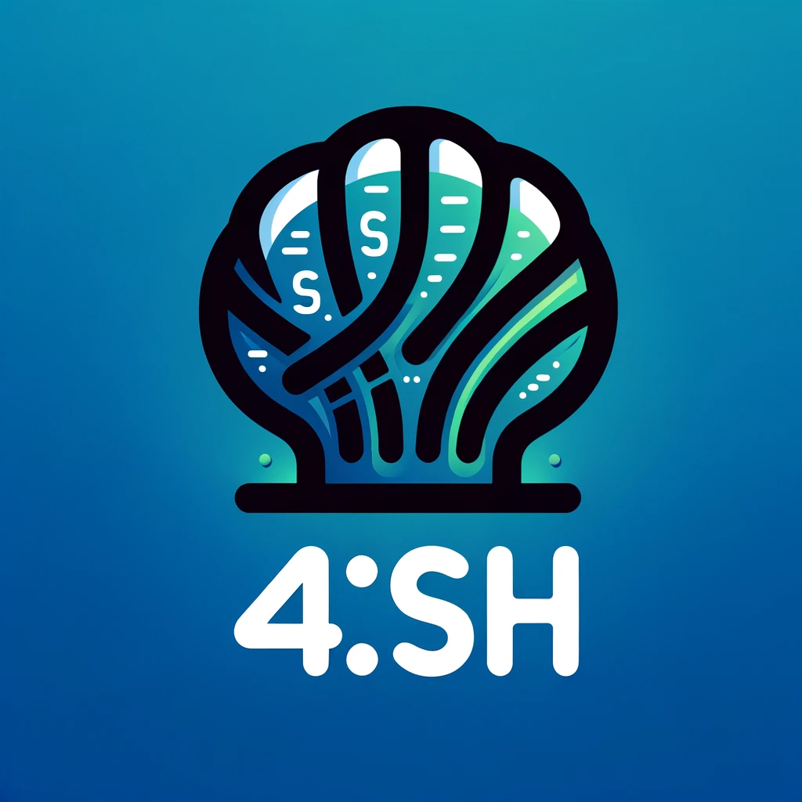
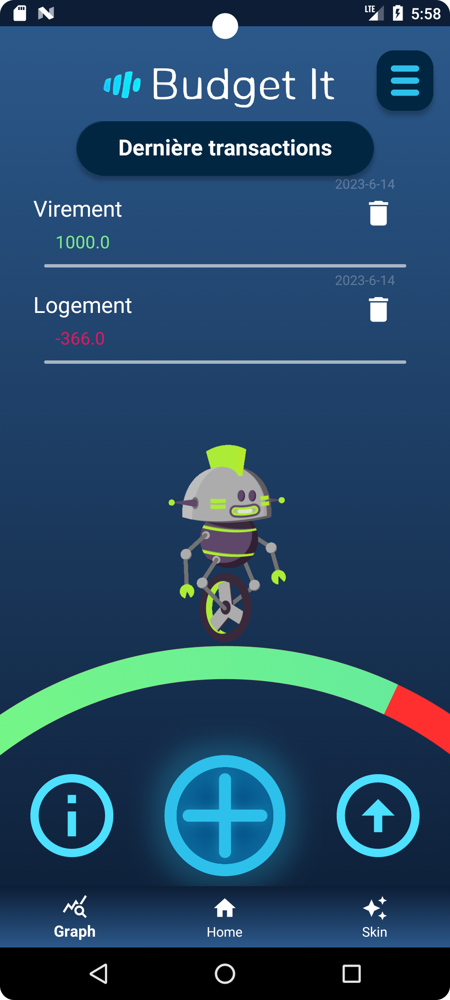
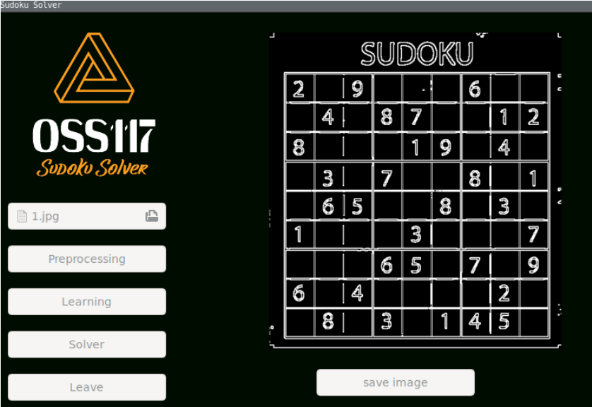
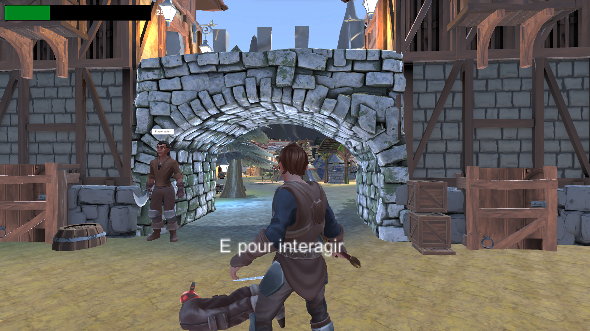
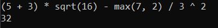
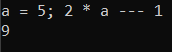
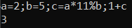

Projets réalisés
I : Shell 42SH (2024)
Le projet de groupe de 4 que j'ai réalisé consiste en un shell code en C POSIX, conçu pour effectuer toutes les opérations courantes d'un shell. Dans le cadre de ce projet, j'ai pris en charge la conception de la partie lexer, ainsi que partiellement l'AST (Arbre Syntaxique Abstrait) et les substitutions de commandes.
La première partie de ma contribution a été la mise en place du lexer, qui est chargé d'analyser et de découper la ligne de commande en tokens, facilitant ainsi le traitement ultérieur. Cette étape est cruciale pour l'interprétation correcte des commandes et des arguments.
En ce qui concerne l'AST, j'ai également apporté ma contribution en élaborant une partie de sa structure. L'AST est essentiel dans l'analyse syntaxique du code et dans la représentation hiérarchique des éléments de la ligne de commande. Ma participation a permis de définir certains aspects de cette structure, contribuant ainsi à la gestion efficace de la logique d'exécution.
Un autre volet de ma contribution a été axé sur les substitutions de commandes, un élément fondamental dans un shell. Les substitutions de commandes consistent à remplacer une partie de la commande par le résultat d'une autre commande. Cette fonctionnalité est cruciale pour la flexibilité et la puissance du shell.
Les parties restantes du projet incluent le parser, chargé de comprendre la structure syntaxique complète des commandes, et les builtins, qui sont des commandes internes du shell. Ces parties sont essentielles pour le bon fonctionnement global du shell.
En résumé, le projet de groupe a été une collaboration visant à créer un shell en C POSIX complet, et ma contribution a principalement porté sur le lexer, une partie de l'AST et les substitutions de commandes. L'ensemble du projet s'est appuyé sur une approche modulaire où chaque composant contribue à la réalisation d'un shell robuste et fonctionnel
Présentation powerpoint du projet 42SHTélécharger le fichier source
II : Jeu dans le terminal avec IA intégrée (2023)

MiniClash est un jeu de stratégie automatisé qui intègre des prédictions d'IA. Ce jeu, inspiré par les progrès de l'intelligence artificielle et basé sur ClashMini, a été créé en utilisant Python et C++.
Les joueurs disposent d'un champ de bataille de 8x5 sur lequel ils placent des troupes en utilisant un élixir limité. Le jeu se déroule en une seule manche, après quoi l'IA prend le contrôle une fois que toutes les troupes ont été déployées.
En utilisant les fonctionnalités d'IA alimentées par TensorFlow, MiniClash offre aux joueurs une expérience stratégique passionnante.
Actuellement en version bêta, le jeu propose trois types de troupes, permettant aux joueurs de déployer toutes les troupes disponibles. Des améliorations et des extensions sont envisageables.
Ce projet m'a permis de combiner ma passion pour l'IA avec le plaisir de concevoir et de développer le jeu. Observer l'évolution et l'amélioration du modèle au fil des entraînements a été particulièrement gratifiant. J'ai également pris plaisir à mettre en place des techniques pour rendre le jeu rapide, prenant des décisions quasi-instantanées et générant un grand nombre de parties.
Rapport de projet de MiniClashAITélécharger le fichier source
III : Application android de gestion de budget (2023)
L'application mobile de gestion de budget que j'ai réalisée en groupe de 4 est une application très utile pour les personnes qui veulent gérer leurs finances de manière plus efficace. Elle permet à l'utilisateur d'entrer toutes les informations relatives à ses entrées et sorties d'argent provenant de divers types tels que les dépenses quotidiennes, les factures mensuelles, les revenus, etc.
L'une des fonctionnalités les plus intéressantes de cette application est la possibilité de voir les secteurs les plus dépensiers grâce à des graphiques. Cela permet à l'utilisateur de mieux comprendre ses habitudes de dépenses et d'ajuster son budget en conséquence.
J'ai eu l'opportunité de travailler sur la partie technique de l'application, notamment sur la connexion à l'application via Firebase et la mise en place de la base de données en temps réel. Cette partie a été très importante pour garantir un accès sécurisé et efficace aux utilisateurs de l'application.
En tant que développeur, j'ai également participé à la création d'un petit robot qui évolue en fonction de l'objectif personnel de l'utilisateur par rapport à son solde. Cela a ajouté une dimension ludique à l'application, ce qui la rend plus intéressante pour les utilisateurs.
En fin de compte, le travail en équipe sur cette application a été très enrichissant pour moi en tant que développeur, car j'ai pu apprendre beaucoup de mes collègues sur la conception et le développement d'applications mobiles. J'ai également pu apporter ma propre expertise à la table, ce qui a permis de réaliser un projet de qualité et convivial pour les utilisateurs.
Rapport de projet de Budget ItIV : Résolution de sudoku par image (2022)
Le projet de résolution de Sudoku par image est l'un des projets les plus intéressants que j'ai réalisés. L'objectif était de créer une application capable de résoudre un Sudoku à partir d'une image capturée par la caméra d'un smartphone. Pour ce faire, j'ai utilisé un réseau de neurones convolutif, également connu sous le nom de CNN, qui a été formé pour reconnaître les chiffres dans une image.
Le processus de création du CNN a été l'une des parties les plus complexes du projet. J'ai commencé par collecter un grand nombre d'images de chiffres manuscrits et les ai utilisées pour former le CNN. J'ai ensuite ajusté les hyperparamètres du réseau pour améliorer les performances de reconnaissance des chiffres. J'ai également fais un algorithme capable de résoudre des sudoku en utilisant du backtracking
Une fois que j'ai réussi à entraîner le CNN, j'ai intégré le modèle dans l'application et j'ai créé un algorithme de résolution de Sudoku pour résoudre les grilles à partir des chiffres détectés par le CNN. Mon groupe a également ajouté une interface utilisateur conviviale pour permettre aux utilisateurs de capturer une image de leur grille de Sudoku et de voir la solution s'afficher.
En fin de compte, j'ai réussi à créer une application capable de résoudre un Sudoku en quelques secondes à partir d'une simple image capturée par la caméra d'un smartphone. Je suis très fier de ce projet et je pense qu'il montre mon engagement pour la résolution de problèmes complexes à travers la programmation et l'exploration de nouvelles technologies.
Rapport de projet de la résolution de sudoku par imageV : Jeu vidéo 'Norfolk' (2021)
Mon projet Norfolk est un MMORPG (Massively Multiplayer Online Game + Role-Playing Game). J'ai travaillé en équipe pour créer ce monde semi-ouvert dans lequel le joueur doit réaliser un certain nombre de quêtes. Nous avons également ajouté un aspect coopératif au jeu grâce au multijoueur. Le héros Galaad commence sa quête à Norfolk et doit remplir les objectifs relatifs au monde (or, niveau de l'équipement et du personnage) avant de se lancer dans la dernière mission qui consiste à sauver la princesse en terrassant le démon responsable du chaos à Norfolk.
D'un point de vue technique, j'ai participé à la création de plusieurs fonctionnalités importantes du jeu. J'ai créé l'inventaire qui permet au joueur de stocker ses objets. J'ai également développé le code pour ramasser et déposer des objets dans l'inventaire. Pour les combats, j'ai écrit le code des coups au corps à corps ainsi que celui de la création d'un monstre araignée. Enfin, j'ai travaillé sur la connexion au serveur et la synchronisation des objets.
Une autre fonctionnalité importante que j'ai implémentée est la texture au sol et le ramassage d'objets à la fois. Cela permet au joueur de visualiser les objets sur le sol et de les récupérer facilement. Enfin, j'ai travaillé sur la connexion au serveur multijoueur et la synchronisation des objets. Cela a été crucial pour permettre aux joueurs de jouer ensemble et de partager les mêmes objets et environnements dans le jeu.
Rapport de projet 'Norfolk'Télécharger le jeu
VI : Calculatrice dans le terminal (2021)
  J'ai récemment développé une calculatrice en Csharp qui fonctionne dans le terminal. Cette calculatrice est destinée à l'utilisation des entiers. L'un des objectifs que je me suis fixé était d'assurer que la calculatrice puisse gérer des opérations de soustraction à plusieurs niveaux. En effet, la calculatrice est protégée pour permettre l'utilisation de moins successifs.
J'ai également ajouté la possibilité d'utiliser plusieurs variables simultanément avec tous les opérateurs disponibles, ce qui permet de faire des opérations plus complexes. De plus, la calculatrice propose également l'utilisation de fonctions prédéfinies, telles que la racine carrée, le maximum, le minimum, la factorielle, la détermination de nombres premiers, la suite de Fibonacci et le PGCD. Cela permet à l'utilisateur de réaliser des opérations plus avancées sans avoir à effectuer des calculs supplémentaires.
Pour créer ma calculatrice en C#, j'ai veillé à ce qu'elle soit facile à comprendre et à utiliser. J'ai également effectué plusieurs tests pour m'assurer de sa fiabilité et de sa précision. J'ai mis en place une fonctionnalité de vérification de syntaxe pour éviter aux utilisateurs de saisir des expressions incorrectes et donc éviter des erreurs. De plus, j'ai ajouté la possibilité d'utiliser plusieurs variables à la fois ainsi que des fonctions prédéfinies comme sqrt, max, min, facto, isprime, fibo et gcd pour permettre à l'utilisateur de réaliser des calculs plus complexes.